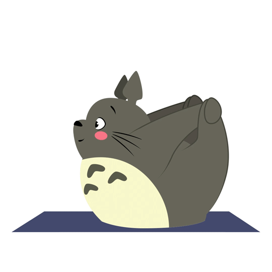
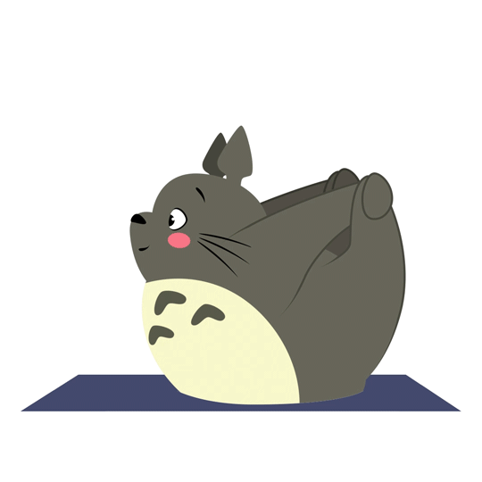
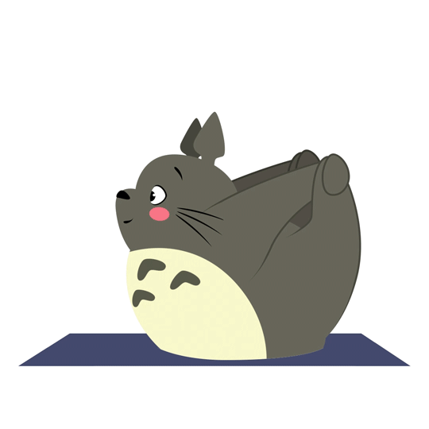

Movie Introductions

My Neighbor Totoro(となりのトトロ)


 



Japanese animate directed by Hayao Miyazaki in 1988
Directed and Written by Hayao Miyazaki, Produced by Toru Hara, Edited by Takeshi Seyama
